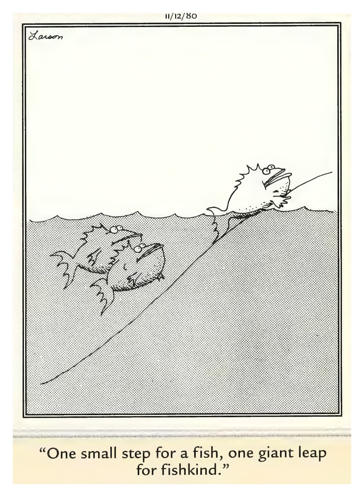

Your Daily Computer Brief
🔴 ALERT
Looking for a deal on a hot new gadget? The Guardian warned Sunday about fake shopping sites built to cash in on Apple's new iPhone launch — researchers watched more than 200 copycat websites appear in a single day. They look convincing, and they often insist on payment by bank transfer or digital currency, skipping the protection your card gives you. Buy only from stores you know, pay by credit card, and treat a too-good price as a warning sign. Already paid? Call your bank right away. *Source: The Guardian (Sept. 13, 2026)*
Today in Tech
- Source: WindowsLatest (Sept. 12, 2026) — Microsoft admitted its big September update breaks the built-in tool that keeps spare copies of your files. Install the fix anyway, then make an extra copy of anything you can't lose.
- Source: Spaceflight Now (Sept. 13, 2026) — SpaceX's 700th Falcon rocket lifted off from Cape Canaveral Sunday, carrying three internet-beaming satellites. Watch from your driveway; it's the county's regular fireworks.
- Source: CBS News Sunday Morning (Sept. 13, 2026) — the head of one of the biggest AI companies went on national TV to ask the whole industry to slow down and build in more safeguards. Even the folks building it want seatbelts on this thing.
Daily Tip
Ever copy something new and lose what you had before? Windows keeps a hidden history of your copies. Press the Windows key (bottom-left corner, with the flag) and the letter V together — a panel opens showing your last several copied items. Click any older one to paste it. The first time, it may ask you to turn the feature on. That's it — no extra program needed.
😄 COMEDY BREAK
